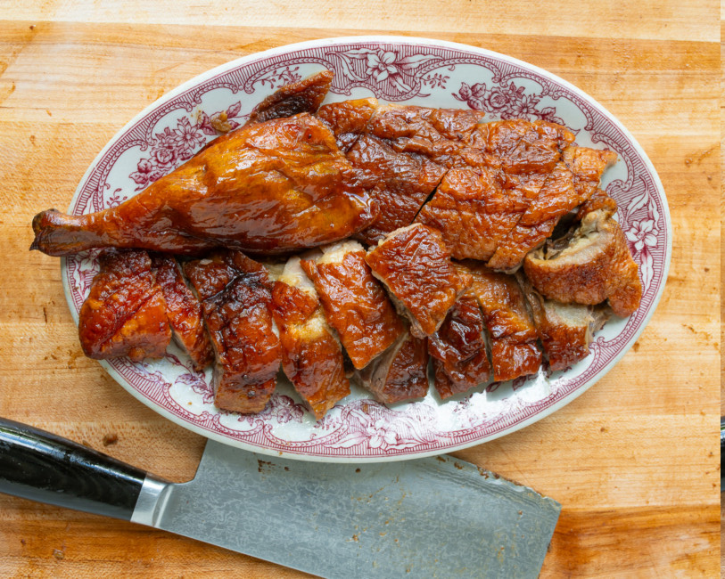

Roast Duck

The glistening, culinary masterpiece, roast duck made the Chinese way.
The recipe for roast duck from The Woks of Life describes a traditional method for preparing a flavorful and aromatic Chinese roast duck. The duck is first seasoned inside with a blend of spices, including five-spice powder and sand ginger powder. It is then marinated with a cooked sauce made from chee hou sauce, hoisin sauce, oyster sauce, and fermented bean curd, among other ingredients.
A key step involves inflating the duck's skin to separate it from the meat, which helps achieve a crispy texture. The duck is then bathed in a hot water and vinegar solution to further tighten the skin and give it a distinctive dark color. After air-drying overnight, the duck is roasted until the skin is perfectly crispy and the meat is tender. The result is a richly flavored roast duck, ideal for serving with rice and vegetables.
Ingredients
For seasoning the duck cavity:
- 1 Long Island (Pekin) duckling (about 5-6 pounds)
- 1.5 tablespoons fine sea salt
- 2.5 teaspoons five-spice powder
- 2 teaspoons sugar
- 1 teaspoon sand ginger powder
- 2 tablespoons Shaoxing wine
For the marinade:
- 2 tablespoons chee hou sauce
- 2 tablespoons warm water
- 1 tablespoon ground bean sauce
- 1 tablespoon hoison sauce
- 1 tablespoon oyster sauce
- 1 tablespoon red fermented bean curd
- 2 teaspoons vegetable oil
- 2 slices fresh ginger
- 2 medium garlic cloves, sliced
- 1 scallion, cut and smashed
- 2 dried bay leaves
- 2 star anise, broken apart
- 1 Chinese cassia cinnamon stick, broken into small pieces
- 1 piece dried mandarin orange peel, broken into small pieces
For water and vinegar bath:
- 6 cups water
- 3 tablespoons Chinese red vinegar
- 2 tablespoons maltose or corn syrup
- 1.5 teaspoons fine sea salt
Additional:
- 0.5 cup hot water for the roasting pan
Steps to Create the Dish
- Trim and Clean the Duck:
- Trim excess fat from the cavity, remove the wing tips, and clean out internal organs. Rinse and dry the duck thoroughly.
- Season the Duck Cavity:
- Rub the inside of the duck with Shaoxing wine and a mixture of salt, five-spice powder, sugar, and sand ginger powder. Refrigerate uncovered for 1 hour.
- Make the Cooked Marinade:
- In a saucepan, heat oil and fry ginger, garlic, scallion, bay leaves, star anise, cinnamon stick, and orange peel until fragrant. Add the sauce mixture and simmer. Let cool completely.
- Marinate and Seal the Cavity:
- Pour the cooled marinade into the duck's cavity, coat thoroughly, and seal the cavity with a metal skewer.
- Inflate the Duck:
- Use an air pump to separate the skin from the meat. Ensure the seal is tight.
- Apply the Water and Vinegar Baths:
- Pour boiling water over the duck, then apply a vinegar solution bath. Let the duck air-dry for 30 minutes and then refrigerate overnight, uncovered.
- Roast the Duck:
- Preheat the oven to 350°F (175°C). Place the duck breast side down on a roasting rack and roast for 25 minutes, then rotate and roast for another 25 minutes. Flip the duck and roast for an additional 20 minutes, then rotate and roast for another 20 minutes. Let the duck rest for 20 minutes.
- Carve and Serve:
- Remove the skewer, pour out and strain the juices, then carve the duck into bite-sized pieces. Serve with the reserved sauce on the side.
Return to home